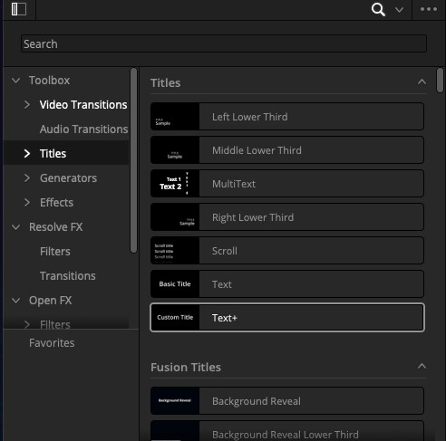
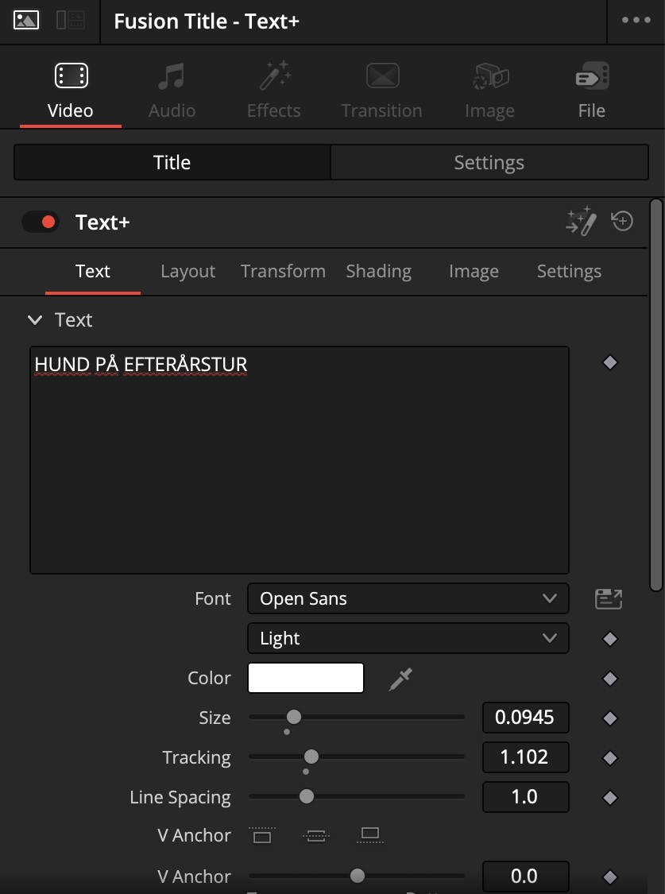
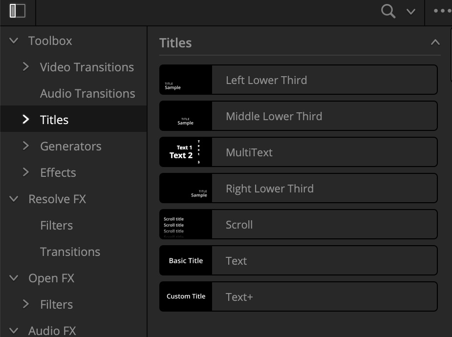
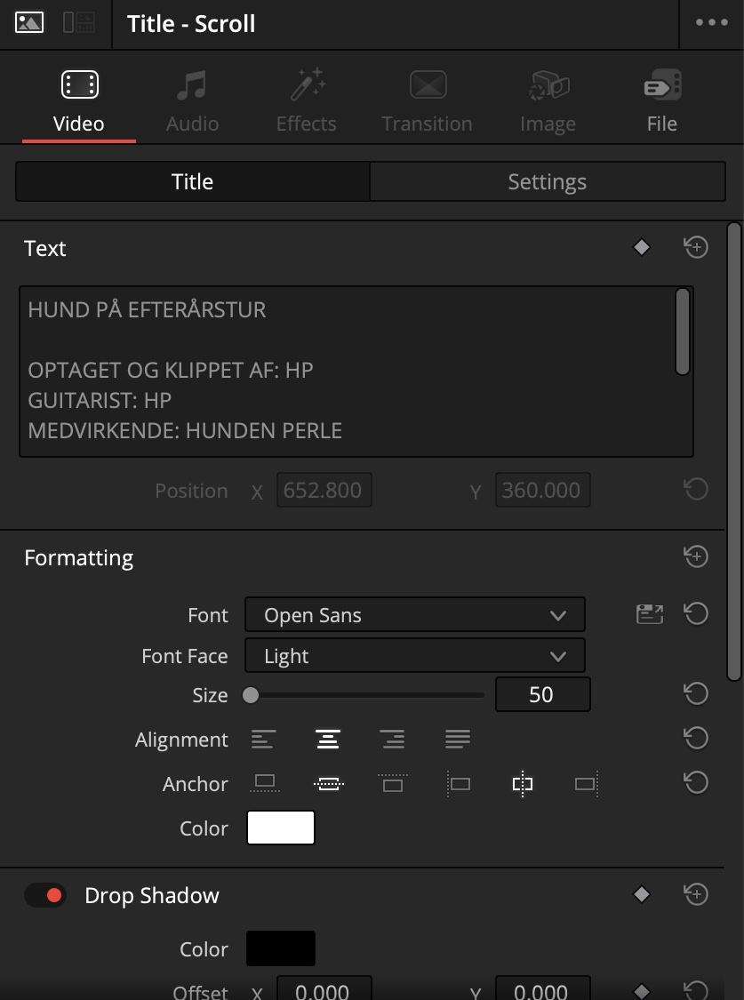

Første del · Vis 6 → Gør 12
Filmens titel
Vis · 6 min
Kig med. Hænderne væk fra musen.
-
Find titlerne i Effects
Åbn Effects i øverste venstre hjørne, og vælg Titles. Der er flere typer. Vi bruger Text+.

-
Gør plads i starten
Sæt playheadet helt i starten af timelinen, og tryk Alt + Y (Windows) / Option + Y (Mac). Nu er alt foran playheadet valgt, på alle spor. Træk det hele et par sekunder til højre, så der bliver et tomt stykke til titlen.
Trykker du kun Y, vælges klippene foran playheadet på ét spor. Begge dele ligger også i menuen Timeline.
-
Træk titlen ind i hullet
Træk Text+ ned i det tomme stykke i starten. Uden noget under sig står titlen på sort.
-
Skriv og formatér i Inspector
Vælg titlen på timelinen, og åbn Inspector. Skriv teksten i det store felt øverst. Under det sætter du skrifttype, farve, størrelse og bogstavafstand (Tracking). Placeringen finder du under fanen Layout.

-
Bestem, hvor længe den står
Titlen er et klip som alle andre. Træk i dens kant på timelinen for at gøre den kortere eller længere.
Text eller Text+: hvad er forskellen?
Text er den enkle titel: skrift, størrelse, farve og placering, og ikke meget mere. Text+ er bygget på Fusion under motorhjelmen, men du redigerer den i Inspector som alt andet. Den giver mere: skygge, kant, bogstavafstand og animation, og den ser skarpere ud. Begge virker i gratisversionen.
Til eleverne: start dem på Text+. Den er ikke sværere at bruge, og de løber ikke tør for muligheder, når de vil have mere.
Gør · 12 min Åbn, når jeg siger nu Nu er det dig
Start i Opg 5 START
Gør plads i starten med Alt + Y (Windows) / Option + Y (Mac), og sæt titlen Hund på efterårstur ind på sort før introen. Vælg en skrift, der passer til filmen.
Sådan
Anden del · Vis 5 → Gør 12
Credits
Vis · 5 min
Kig med. Hænderne væk fra musen.
-
Træk en Scroll-titel ind til sidst
Under Effects → Titles ligger Scroll: en enkel titel, der ruller op over skærmen af sig selv. Derfor bruger vi den her i stedet for Text+. Læg den efter introens sidste klip.

-
Skriv én rolle pr. linje
I Inspector skriver du credits som almindelig tekst. Tryk Enter for en ny linje, og centrér teksten.

-
Længden er farten
Teksten ruller hele vejen igennem på den tid, klippet varer. Gør klippet længere, og teksten ruller langsommere.
Til undervisningen
Lad eleverne skrive credits med rigtige roller, også selvom én person har gjort det hele. Det tvinger dem til at tænke over, hvem der lavede hvad, og det er et godt sted at tale om musikrettigheder.
Gør · 12 min Åbn, når jeg siger nu Nu er det dig
Start i samme timeline, du arbejder i
Lav credits til introen: instruktør, klipper, musik og medvirkende. Find en fart, så man kan nå at læse dem.
Sådan
- Effects → Titles → Scroll: træk den ind efter introens sidste klip. Se trinet
- Én rolle pr. linje i Inspector, og centrér teksten. Se trinet
- Længere klip giver langsommere rulning. Se trinet
Hurtigt færdig?
Fade titlen ind og ud med håndtagene fra Opgave 4, eller sæt en Cross Dissolve i begge ender af den.
Checkpoint
Næste opgave starter i Opg 6 START.